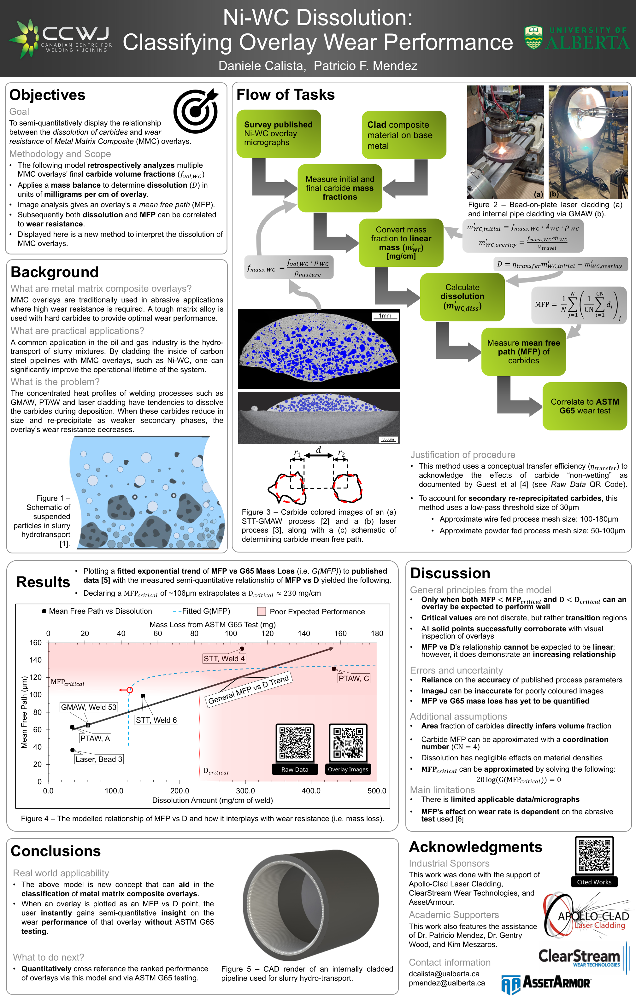

Accurately Simulating a Weld as a Moving Point Heat Source
Tian Ooi & Lauren Smart
DRA: Simulate welds in COMSOL and compare to Rosenthal Equation
Tian Ooi & Lauren Smart
DRA: Simulate welds in COMSOL and compare to Rosenthal Equation

Daniele Calista
Poster for AWS/Fabtech 2022 on classifying overlay wear performance
Matthew Schwenk
DRA Poster
Tian Ooi & Lauren Smart
DRA: Simulate welds in COMSOL and compare to Rosenthal Equation